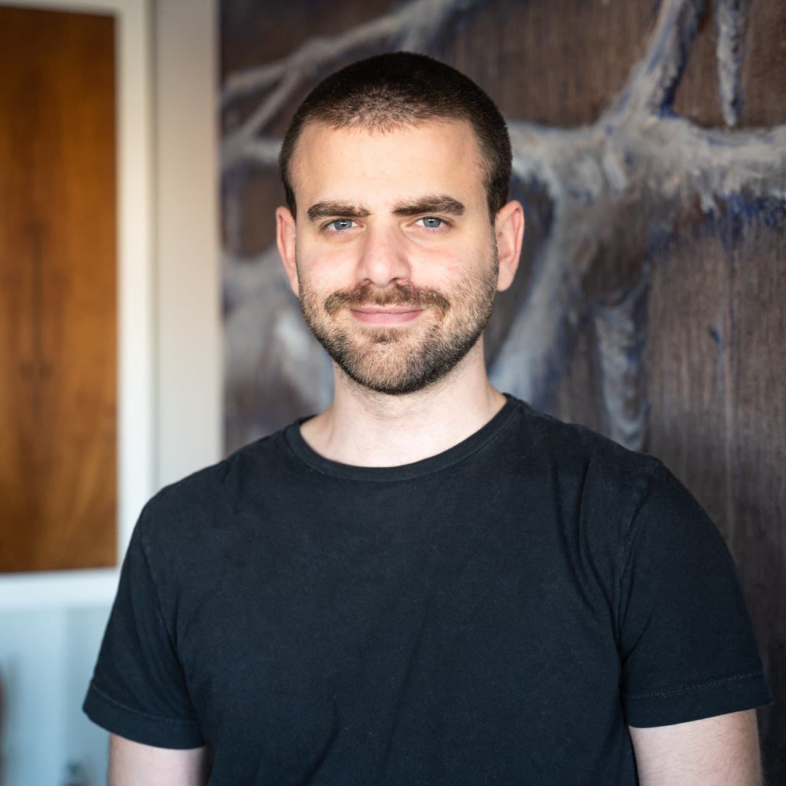

Manuel Gvirtz - Curriculum Vitae
Descripción personal
Product Owner todo terreno, con experiencia reciente en la industria de las criptomonedas. Soy responsable y enfocado en objetivos, con la experiencia de sacar distinto tipo de proyectos en organizaciones variadas. En constante aprendizaje y con un enfoque generalista, actualmente interesado en desarrollarme dentro de la industria tecnológica en productos de alto impacto. Me gustan pensar problemas con datos y pensar soluciones creativas a problemas que no pensamos que puedan resolverse.
Educación
2018 – 2019 Universidad Torcuato Di Tella
Maestría en finanzas, especialización Mercado de capitales. Tesis pendiente.
2012 – 2017 Universidad de San Andrés
Licenciatura en administración de empresas y Contador público
2009 – 2011 Escuela Técnica ORT 2
Bachiller técnico con orientación en gestión administrativa
Experiencias laborales
Mayo 2020 - Presente Product Owner en Ripio
Como Product Owner de RCN estoy a cargo del producto RCN, inscripto dentro de la industria de finanzas decentralizadas(DeFi). Coordino un equipo interdisciplinario de desarrollo, comunicación y diseño de acuerdo al framework de metodologías ágiles. Participo activamente de la definición de la estrategia del producto junto al CEO de la compañía y de la transformación de esta a requerimientos específicos. Manejo la relación del producto con otras áreas de soporte de la empresa.
Marzo 2019 – Mayo 2020 Business Developer en Ripio
Mis tareas están abocadas al desarrollo y ejecución de la estrategia de Ripio Credit Network. Particularmente me encargué del desarrollo de partnerships con empresas del ecosistema de criptomonedas, de la negociación y estructuración de compra de carteras de crédito al consumo en Argentina y latinoamérica, benchmarking e identificación de oportunidades de negocio.
Septiembre 2018 – Enero 2019 Analista Financiero en Adduntia SRL
Mis responsabilidades incluían la confección de reportes financieros de cuentas individuales y corporativas, el análisis de mercados financieros y la atención a clientes y operación de sus cuentas. También brindaba soporte para la confección de productos estructuradosy para la valuación de empresas públicas y privadas.
Noviembre 2017 – Agosto 2018 Responsable de proyectos en Crom SRL
Mi tarea consistía en el análisis, el desarrollo y la implementación de mejoras en todos los aspectos de la organización. Diseñé e implementé mejoras en las áreas de producción, almacenamiento, tesorería y sistemas.
Skills
Idiomas
Inglés: dominio avanzado, oral y escrito
Italiano: dominio intermedio oral y escrito
Informática
Microsoft office suite – Dominio avanzado
Pyhton : Librerías Pandas, Numpy, Matplotlib, Seaborn, Scikit Learn
Foto

Hobbies
Tenis, Running, Música, Gaming (más que nada Age of Empires 2)
Motivación
Estoy en constante búsqueda de nuevos desafíos y aprendizajes, y mi actual experiencia dentro de una empresa de tecnología me puso en contacto directo con el desarrollo de software, y me permitió vivir en primera persona todas sus virtudes y defectos. En distintas oportunidades me aproximé al aprendizaje de programación tangencialmente impulsado por mi curiosidad. Creo que en este momento, y en vistas de mi intención seguir en la industria tecnológica, tener conocimientos técnicos significaría un salto cualitativo muy importante dentro de mi carrera en el área de producto, teniendo en cuenta la combinación con mis experiencias profesionales pasadas y mi carrera universitaria.